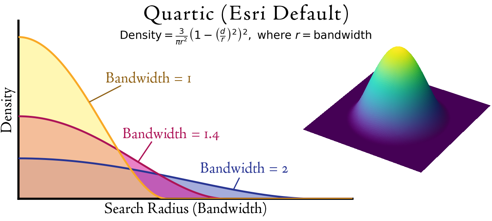
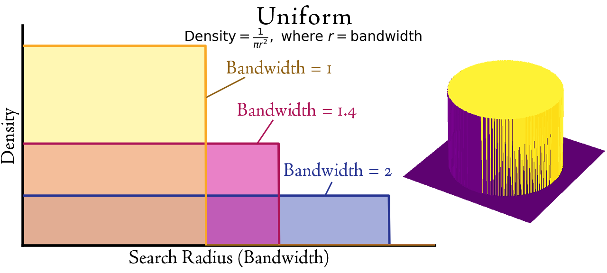
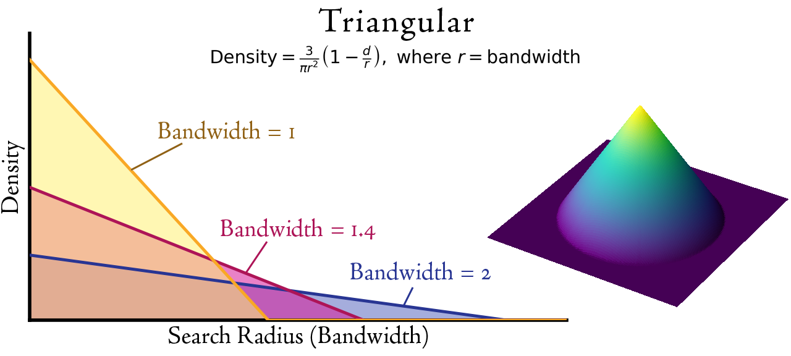
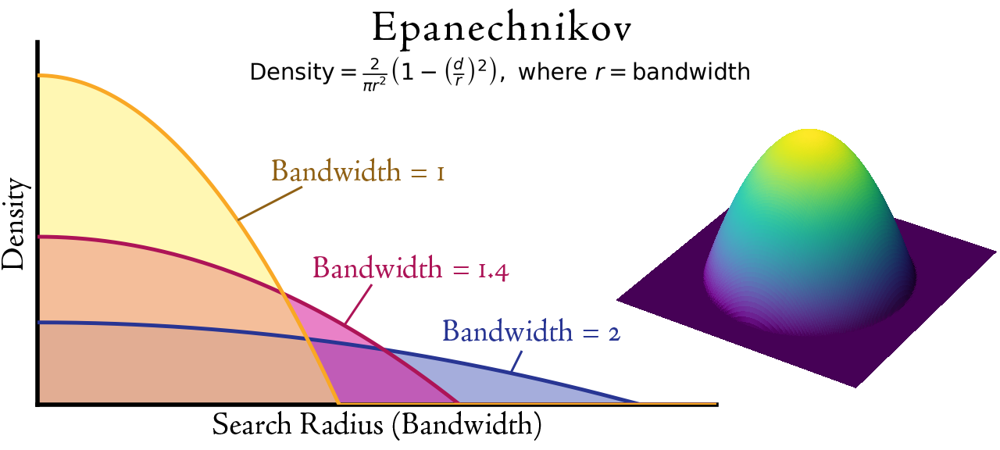
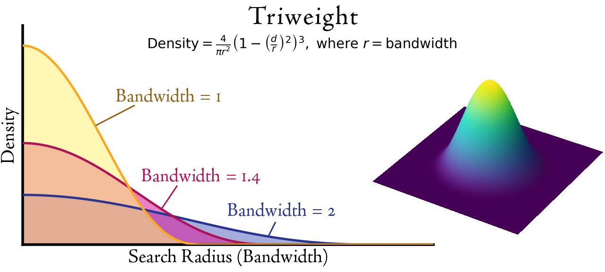
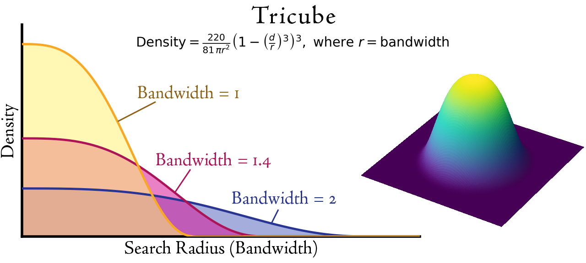
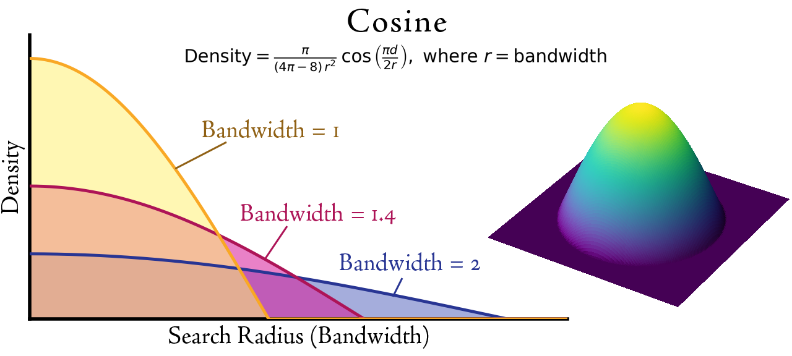
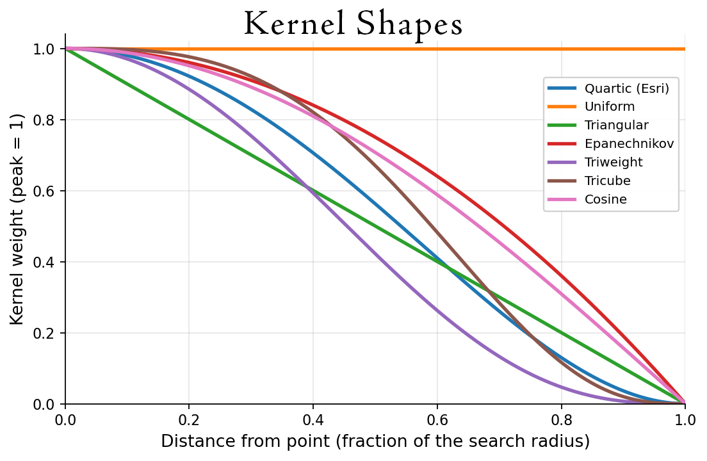

Kernel Density Enhanced
Jenness Enterprises Wildlife Tools · Kernel Density Tools
Summary
Creates a kernel-density surface from point features. The quartic kernel reproduces the Esri Kernel Density tool; other finite-support kernel shapes, an explicit planar/geodesic distance choice, and three output value types are also offered.
Usage
A kernel density surface estimates the intensity of a point pattern: each input point is replaced by a smooth, finite-support kernel that adds weight to nearby cells out to the search radius (bandwidth) and drops to zero beyond it, and the overlapping kernels are summed. Such surfaces are widely used to estimate animal utilization distributions (home ranges) and the density of mapped features.
Distance method. Planar measures straight-line distance in the projection's linear units; Geodesic measures true distance on the spheroid (Haversine). Input in a geographic (latitude–longitude) coordinate system is always analyzed geodesically, and the distance method is then locked to Geodesic.
Output cell values.
- Densities — point density per a chosen area unit (the Esri behavior).
- Expected counts — the expected number of points per cell; the cell values sum to the total number of input points.
- Proportion under curve — the cumulative proportion of the total volume under the surface, from about 0 at the outer edge to 1 at the peak. Contour this surface at one minus a target percentage to obtain home-range isopleths; the Kernel Density Probability Contours tool recognizes this output automatically.
Default = 0.9 × min( SD , √(1/ln2) × Dm ) × n−1/5where
SD is the standard distance of the points about their mean center,
Dm is the median distance from the points to the mean center, and
n is the number of points (or the sum of the population field). In effect it takes
the smaller of the standard distance and the scaled median distance, then shrinks that value by a
factor of 0.9 and by the number of points raised to the −1/5 power, so the bandwidth gets
smaller as the number of points grows. Treat the default as a starting guess based only on the
spatial distribution of the points, and supply your own value when you have a better one.The output raster carries statistics and a histogram, so it renders correctly without a separate Calculate Statistics step. It has a single continuous value band (no attribute table).
Kernel shapes
Seven kernels are offered, all with finite support — they reach exactly zero at the search radius (infinite-support kernels such as the Gaussian, which never reach zero, are intentionally not offered). All are normalized so each point contributes the same total volume; they differ in how sharply weight falls off with distance.
- Quartic (Esri KD method) — the biweight kernel used by the Esri Kernel Density tool; a smooth bell reaching zero at the radius.
- Uniform — a flat disk; every location within the radius gets equal weight.
- Triangular — weight falls off linearly with distance (a cone).
- Epanechnikov — a gentle parabola; statistically efficient.
- Triweight — more sharply peaked than the quartic.
- Tricube — a sharply peaked kernel common in local regression.
- Cosine — a raised-cosine taper to zero.








Parameters
| Label | Explanation | Data Type |
|---|---|---|
| Input point features | The points whose density is estimated. A layer selection is honored. Geographic input is analyzed with geodesic distances. | Feature Layer |
| Population field | Optional numeric weight per point (for example, a count). If NONE, every point counts as 1. | Field |
| Output raster | The output kernel density raster (single continuous band). | Raster Dataset |
| Output cell size | A number or an existing raster. Auto-filled with the Esri default (Cell Size environment, else Snap Raster cell size, else the shorter side of the extent divided by 250) when you choose the input. | Analysis Cell Size |
| Search radius (bandwidth) | The distance at which each point's kernel falls to zero. Leave empty for the Silverman default (see the note above). | Linear Unit |
| Kernel shape | One of the seven finite-support kernels (see Kernel shapes). Quartic reproduces the Esri tool. | String |
| Distance method | Planar or Geodesic. Locked to Geodesic for geographic data. | String |
| Output cell values | Densities, Expected counts, or Proportion under curve (see Usage). | String |
| Area units | The area unit for the Densities output (e.g. Square kilometers, Hectares, Acres). Used only when Output cell values is Densities. | String |
Environments
This tool honors the following analysis environments:
- Output Coordinate System — the points are projected into this system and the whole surface is computed there.
- Cell Size
- Processing Extent — if unset, the input bounding box expanded by the search radius (so the surface is not clipped at the points).
- Snap Raster
- Mask
Code sample
KernelDensityEnhanced example (stand-alone script)
Build a quartic kernel density surface (densities per square kilometer) from animal relocations, letting Silverman's rule choose the bandwidth.
import arcpy
arcpy.ImportToolbox(r"C:\Tools\JennessEnterprisesTools.pyt")
arcpy.jenness.KernelDensityGenerate(
in_features="Animal_Relocations",
out_raster=r"C:\Project\HomeRange.gdb\KD_density",
kernel="Quartic (Esri KD method)",
distance_method="Planar",
out_value="Densities",
area_unit="Square kilometers")References and further reading
- Silverman, B.W. (1986). Density Estimation for Statistics and Data Analysis. Chapman and Hall, London.
- Worton, B.J. (1989). Kernel methods for estimating the utilization distribution in home-range studies. Ecology 70(1):164–168.
Suggested citation
Jenness, J. (2026). Kernel Density Enhanced. Jenness Enterprises Wildlife Tools for ArcGIS Pro. Available at: http://www.jennessent.com.